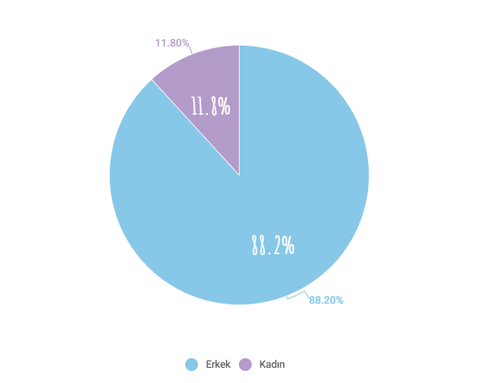

Bilişim sektöründe cinsiyet eşitliği konusu, son yıllarda giderek daha fazla önem kazanmaktadır. Sektörde kadınların sayısı, erkeklerin sayısına kıyasla hala çok düşüktür ve kadınlar sektörde kariyer yapmak için birçok zorlukla karşılaşmaktadır. Ancak, sektörde cinsiyet eşitliği konusunda daha fazla farkındalık yaratılmaya başlandı ve birçok şirket bu konuda çalışmalar yürütmeye başladı. Bilişim sektöründe cinsiyet eşitliği sağlamak için genç kızlar ve kadınlara yönelik eğitim programları düzenlenmeli, kadınların sektördeki fırsat eşitliği, ücret eşitliği ve terfi fırsatları gibi konularda erkeklerle aynı şartlarda olmalarını sağlayacak politikalar geliştirilmeli ve uygulanmalıdır.

Talent Grid 2021 Yazılımda Kadın Raporuna göre;


319 yazılımcı kadın arasında, yönetim seviyesinde (Lead,
Manager, Director, CTO gibi ünvanlara sahip olanlar) olanların
oranı yalnızca %3.13iken, 2377 erkek yazılımcı arasında bu oran
%7.9. Yani teknoloji odağında çalışan kadınların yönetimde yer
alma oranı, erkeklere göre daha düşük.

Erkeklerin %26.1’i kendini Full-Stack Developer olarak tanımlarken, bu oran kadınlarda yalnızca %16.2. Data Science’ta ise bu durum tam tersi. Kadınların %16.5’i DataScientist rolünde iken, bu oran erkeklerde yalnızca %4.9.

kadınlardaki React bilme oranı, erkeklere göre daha düşük. Erkeklerin %65.9’u React bildiğini iletirken, kadınlarda bu oran %55.6. Aynı şekilde Node.JS özelinde de React’teki gibi erkeklerdeki oranın kadınlara göre yüksek olduğu bir resim var. Erkeklerin %36.2’si top 5 programlama dili içerisine Node.JS eklemişken, kadınlarda bu oran %22.2.